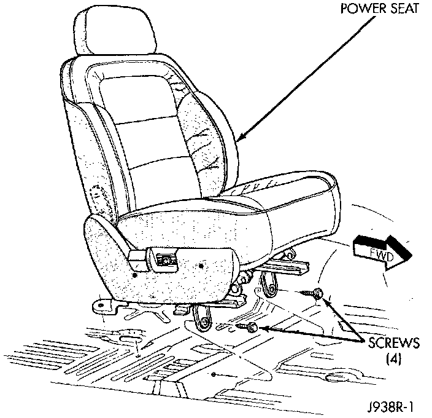

Power Seat Adjuster and Motors
REMOVAL1. Move the seat to the forward-most position, if possible.
2. Remove the single screw that secures each of the two rear seat track covers to the rear of the seat tracks and remove the covers.
3. Remove the single screw that secures the rear of each of the two seat tracks to the floor pan.
4. Move the seat to the rearward-most position, if possible.
5. Disconnect and isolate the battery negative cable.
Power Seat Remove/Install - Typical:

6. Remove the single screw that secures the front of each of the two seat tracks to the floor pan.
7. Tilt the seat rearward and unplug the power seat wire harness connector located under the seat cushion.
8. Remove the seat assembly from the vehicle.
9. Remove the three screws that secure the outboard seat cushion side shield to the seat cushion frame and pull the shield away from the seat cushion.
10. Remove the four nuts that secure the upper seat adjuster mounting rails to the seat cushion frame.
11. Unplug the wire harness connectors as required, depending upon how the vehicle is equipped, to separate the power seat motors and adjuster from the seat cushion frame.
12. Reverse the removal procedures to install. Tighten the seat mounting hardware as follows:
- Seat cushion frame to adjuster nuts - 20 N.m (15 ft.lbs)
- Seat adjuster to floor pan bolts - 29 N.m (20 ft. lbs.).